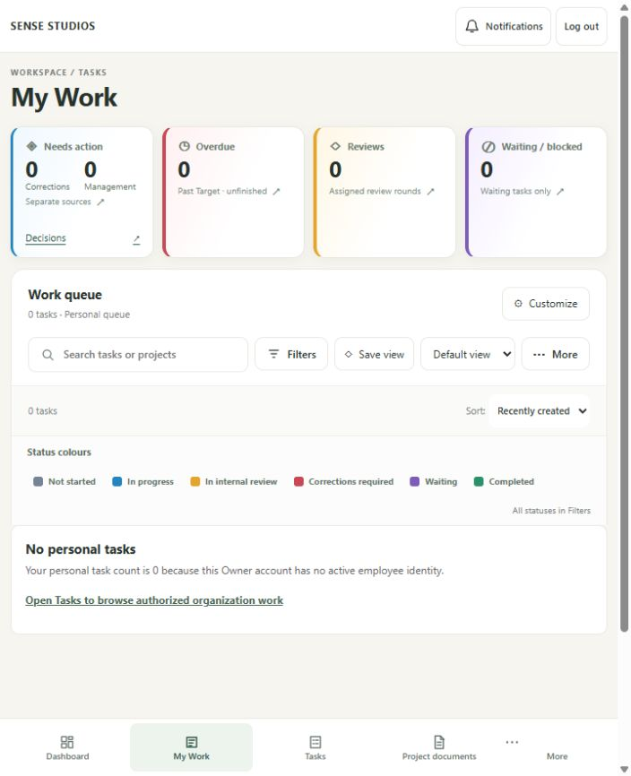
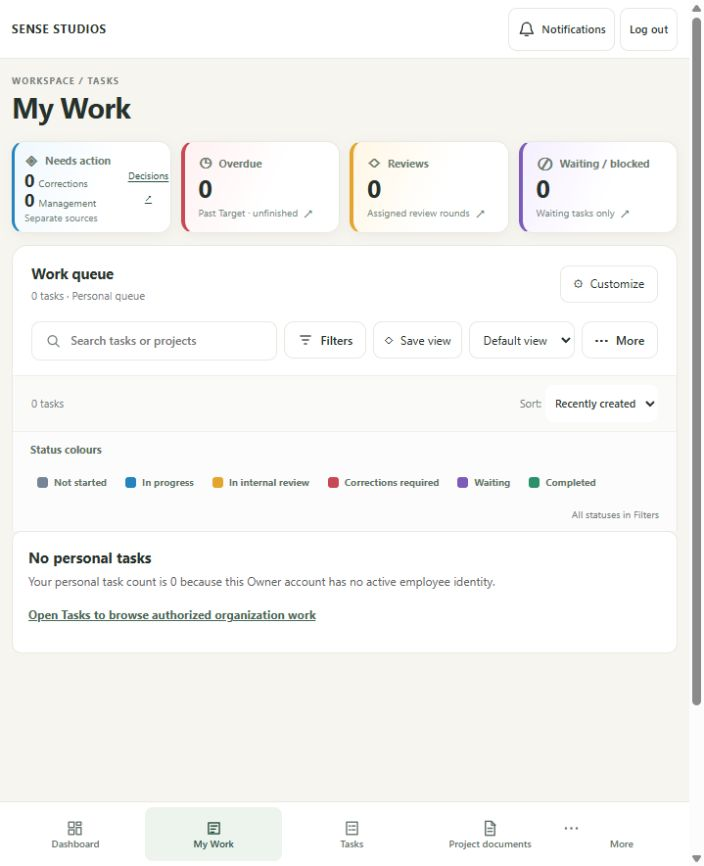
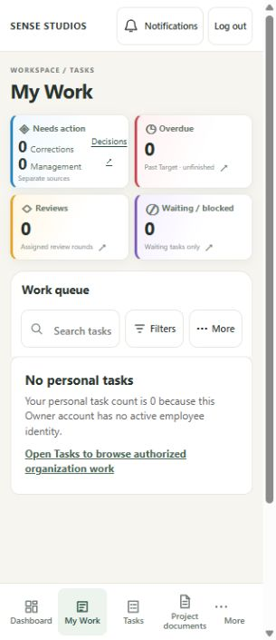
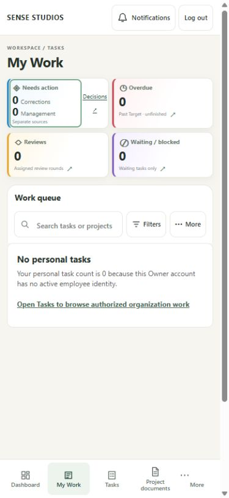
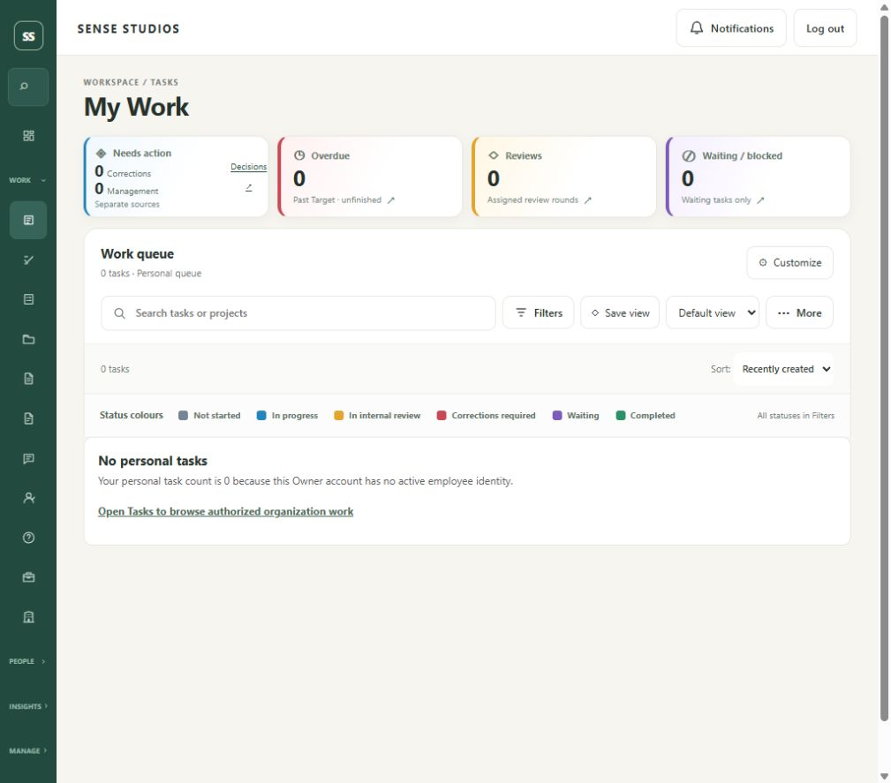
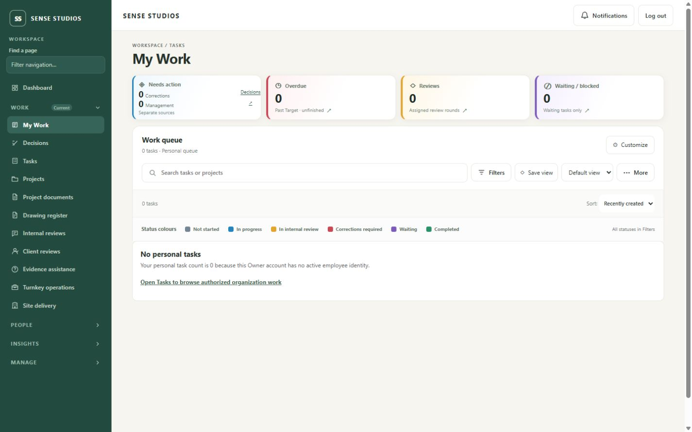

Compact My Work cards
Actual retained Owner preview. Zero personal tasks is correct; all50 staff tasks are available through Owner Tasks. Browser bitmaps may be cropped; CSS geometry is recorded independently.
Report and limitations · Geometry · Checks
Before719×884 —149.5px cards
After719×884 —93.5px cards
320×740 —86.19/77.09px rows
390×844 —keyboard focus preserved
1024×900 —93.5px cards
1440×900 —93.5px cards